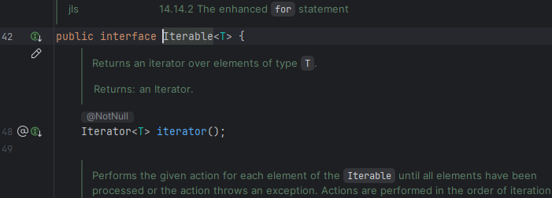

Hasta ahora, para recorrer nuestras colecciones (da igual el tipo) hemos usado principalmente dos estructuras: for-each y while (!coleccion.isEmpty).
En el caso del while, vimos que no nos quedaba más remedio que introducirlo para eliminar elementos de pilas (hacer pop()) y colas (hacer poll()), ya que, mediante el for-each Java se volvía loco al eliminar "cosas" mientras se recorre esa misma la lista (obteniendo una excepción ConcurrentModificationException). Por otro lado, for-each nos servía para recorrer nuestras listas con un cierto orden, cosa que con while (!coleccion.isEmpty) no podemos hacer a no ser que vayamos borrando elementos y modificando la lista sobre la marcha. Como ves, con ambas estructuras estamos limitados para realizar según qué cosas.
Para dar solución a los problemas de cada estructura, tenemos disponible la interfaz Iterable<E> y su método iterator() que implementan todo tipo de clases que desciendan de Collection.
Por ejemplo, para ArrayList:
La forma de utilizar el método iterator() es creando un objeto de tipo Iterator<E>, que es el único método abstracto que contiene la interfaz Iterable:

public class Main {
public static void main(String[] args) {
ArrayList<String> nombres = new ArrayList<>(Arrays.asList("Patri","Pedro","Luis","Paula"));
Iterator<String> it = nombres.iterator();
}
}Este objeto permite recorrer elementos de una colección uno por uno, haciendo uso de los métodos .hasNext(), .next() y .remove():

- next() - devuelve el siguiente elemento en la colección. Si no existe próximo elemento y se invoca, se produce una NoSuchElementException.
- hasNext() - devuelve true si existe un próximo objeto a retornar a través de la llamada a la función next().
- remove() - Elimina el último objeto retornado por la función next(). Si no se invoca next() antes de remove() o se invoca dos veces a remove() después de next(), se produce una IllegalStateException.
La forma de usar el iterador también es a través de un while, pero modificaremos la condición:
public class Main {
public static void main(String[] args) {
ArrayList<String> nombres = new ArrayList<>(Arrays.asList("Patri","Pedro","Luis","Paula"));
Iterator<String> it = nombres.iterator();
while (it.hasNext()) {
String elemento = it.next();
System.out.println(elemento);
}
}
}Y dirás... Pero esto es lo mismo que el for-each. Eso es porque todavía no ha entrado en acción el método remove(), el cual nos va a permitir eliminar elementos sin que salte una excepción de error:
public class Main {
public static void main(String[] args) {
ArrayList<String> nombres = new ArrayList<>(Arrays.asList("Patri","Pedro","Luis","Paula"));
Iterator<String> it = nombres.iterator();
while (it.hasNext()) {
String elemento = it.next();
System.out.println(elemento);
if (elemento.equals("Patri")) {
it.remove();
}
}
System.out.println(nombres); // [Pedro, Luis, Paula]
}
}Uso de Iterator con clases personalizadas
También se puede usar un Iterator para recorrer listas de objetos en Java. Ejemplo con una lista de objetos de una clase Persona...
class Persona {
String nombre;
int edad;
public Persona(String nombre, int edad) {
this.nombre = nombre;
this.edad = edad;
}
@Override
public String toString() {
return nombre + " (" + edad + " años)";
}
}
Uso de Iterator con objetos Persona:
import java.util.ArrayList;
import java.util.Iterator;
public class IteratorObjetos {
public static void main(String[] args) {
ArrayList<Persona> listaPersonas = new ArrayList<>();
listaPersonas.add(new Persona("Juan", 25));
listaPersonas.add(new Persona("Ana", 30));
listaPersonas.add(new Persona("Luis", 22));
Iterator<Persona> iterador = listaPersonas.iterator();
while (iterador.hasNext()) {
Persona persona = iterador.next();
System.out.println(persona);
// eliminar personas menores de 25 años
if (persona.edad < 25) {
iterador.remove();
}
}
System.out.println("Lista final después de eliminar menores de 25 años:");
for (Persona p : listaPersonas) {
System.out.println(p);
}
}
}
Para estructuras Map...
En Java, HashMap<K, V> no implementa Iterable directamente, pero podemos usar Iterator para recorrer sus claves, valores o pares clave-valor.
public class IterarHashMapPares {
public static void main(String[] args) {
HashMap<Integer, String> mapa = new HashMap<>();
mapa.put(1, "Ana");
mapa.put(2, "Luis");
mapa.put(3, "Carlos");
Iterator<Map.Entry<Integer, String>> iterador = mapa.entrySet().iterator();
while (iterador.hasNext()) {
Map.Entry<Integer, String> entrada = iterador.next();
System.out.println("Clave: " + entrada.getKey() + ", Valor: " + entrada.getValue());
}
}
}
Cuidado con modificar la lista después de inicializar Iterator: ConcurrentModificationException
Para la lista declarada previamente, realizar una operación como la siguiente no lanzará ninguna excepción:
public class Main {
public static void main(String[] args) {
ArrayList<String> nombres = new ArrayList<>(Arrays.asList("Patri","Pedro","Luis","Paula"));
Iterator<String> it = nombres.iterator();
nombres.set(1,"Juan");
while (it.hasNext()) {
String elemento = it.next();
System.out.println(elemento);
if (elemento.equals("Patri")) {
it.remove();
}
}
System.out.println(nombres); // [Juan, Luis, Paula]
}
}Esto es porque modificar un elemento existente con set() no cambia la estructura de la lista, sólo reemplaza un valor. Sin embargo, añadir un nuevo elemento después de inicializar el Iterator generará una ConcurrentModificationException:
public class Main {
public static void main(String[] args) {
ArrayList<String> nombres = new ArrayList<>(Arrays.asList("Patri","Pedro","Luis","Paula"));
Iterator<String> it = nombres.iterator();
nombres.add("Juan");
while (it.hasNext()) {
String elemento = it.next(); // aquí se lanza ConcurrentModificationException
System.out.println(elemento);
if (elemento.equals("Patri")) {
it.remove();
}
}
System.out.println(nombres); // [Pedro, Luis, Paula]
}
}Cualquier modificación estructural en la lista (como add() o remove()) después de crear el Iterator rompe la sincronización y dispara una ConcurrentModificationException. Por eso, es importante usar siempre iterator.remove().